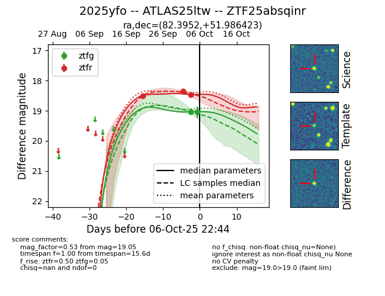
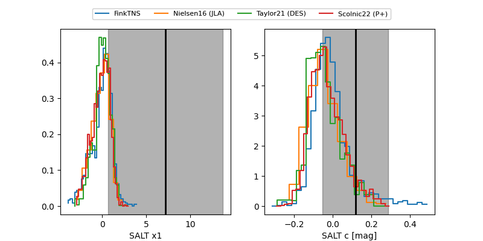

FINK: ZTF25absqinr
Lasair: ZTF25absqinr
ALeRCE: ZTF25absqinr
TNS: 2025yfo
YSE: 2025yfo
ZTF25absqinr (ztf,fink)
2025yfo (tns,yse)
ATLAS25ltw (atlas)
equatorial (ra, dec) = (82.3952,+51.98642)
galactic (l, b) = (158.7535,+9.64983)


last ztfg=19.05, ztfr=18.46
2 ztfg, 3 ztfr detections